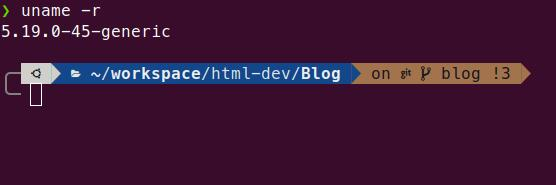
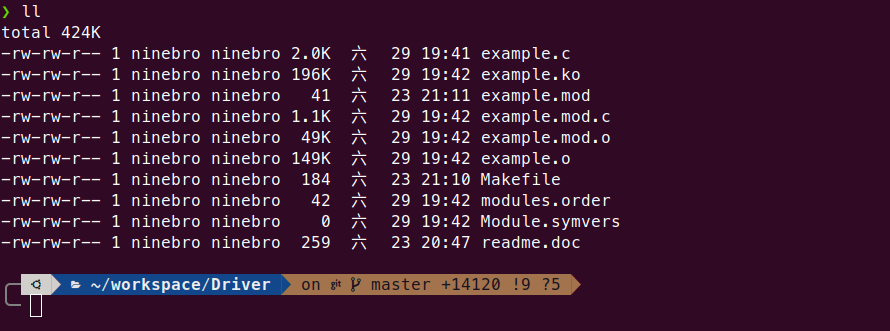
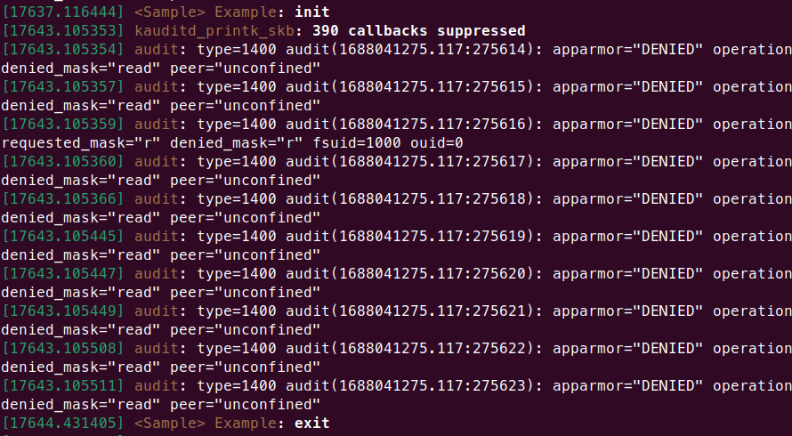

Make a Driver in Linux OS
Date: 2023/06/28
Auth: Guanyan.Wang
--------------------------------------------------------------------1. Getting-start
First, we need to build essential environment for developing linux Driver, build-essential will install tools that mandatory for compiling program such as gcc, make etc.
$sudo apt-get install build-essential linux-headers-$(uname -r)$(uname -r) will get your kernel version
2. Simple Driver !
/* example.c */
#include <linux/init.h>
#include <linux/module.h>
MODULE_LICENSE("Dual BSD/GPL");
static int example_init(void) {
printk("<Sample> Example: init\n");
return 0;
}
static void example_exit(void) {
printk("<Sample> Example: exit\n");
}
module_init(example_init);
module_exit(example_exit);$(printk) is like printf in kernel programing. If we need to debug, this will be useful, we can use $(sudo dmesg) to observe the result.
3. Compile
We need to make a makefile to compile our program
$touch MakefileUse touch command to create a Makefile, then we write follow program into Makefile
obj-m := example.o
ifeq ($(KERNELDIR),)
KERNELDIR=/lib/modules/$(shell uname -r)/build
endif
all:
make -C $(KERNELDIR) M=$(PWD) modules
clean:
make -C $(KERNELDIR) M=$(PWD) cleanUse make command to compile
$makeAfter we make to compile our program, it will generate some files
4. Load/Remove Driver
We use linux command $(insmod) and $(rmmod) to load/remove Driver
$sudo insmod example.ko
$sudo rmmod exampleYou can use command $(sudo dmesg) to observe the Driver info
Reference
Writing device drivers in Linux: A brief tutorial
--------------------------------------------------------------------